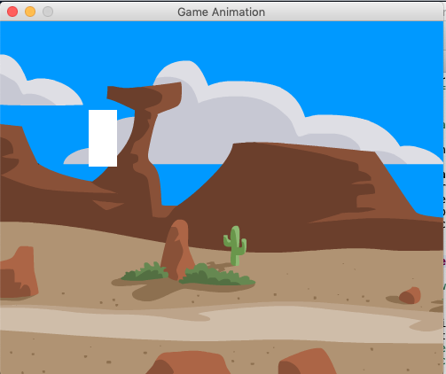
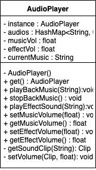
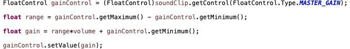

Audio
¡Ey! ¡Buenos Dias!
Los si que vuelan en esta compañia ¿no? Recien acabas un trabajo y ya hay otro esperandote.
¡Anímo que ya caso te ascienden!
¡Señores y Señoras! Hoy es el día en que asignaré uno de los trabajos más importantes de esta compañia!
Hmmm... a ver... ¡TÚ!
Tú ya estas muy familiarizado con este cliente así que eres la persona ideal para darle el seguimiento al proyecto.
El proyecto es esta vez algo de vanguardia. Buena Suerte.
Task Information
A3-Audio
Descripcion
'A3-Audio' es la tercera iteración del juego más vendido por nuestro cliente, y en esta nueva versión se espera la incorporación de sonidos y música.
Se espera la entrega para el día: Viernes 22 de Marzo del 2019
Audio Digital
Empezemos revisando cómo es que funciona la grabación, representación y reproducción de sonidos en las computadoras.
Para esto, revisa el siguiente video: Understanding Digital Audio
Audio Digital
Por fortuna Java ya cuenta con una librería que se encarga de hacer todo el manejo de dispositivos y audio, así que no hay de que preocuparse por obtener información de dispositivos de salida ni escribir C++. (Aunque si se desea, también se puede trabajar con los 'DataLines' en Java para obtener efectos especiales.)
Esto nos da la oportunidad de implementar un sistema más ambicioso. Capaz de reproducir múltiples sonidos, música, con controles de volumen y algún control de acción.
Estructura
Esta vez vamos a implementar una clase así que sólo tenemos el diagrama UML de dicha clase.
Singleton
Notarás en el diagrama anterior algo peculiar... El constructor de la clase es privado. Esto es muy común al usar el patrón de diseño . Este patrón nos sirve para facilitar el acceso a una clase desde cualquier parte del código del proyecto y forzar a que no haya más de una instancia de la clase en todo el software.
Esto se logra con un contructor privado y definiendo un método público y estático get() que se encarga de crear una instancia de la clase si no existera, y devolverla.
Cosas que son notables de un Singleton:
- Hay una variable llamada del tipo de la .
- El es y ejecutado sólo 1 vez.
- Hay un método que devuelve la instancia del Singleton.
Singleton
Empezemos haciendo la clase como un Singleton.
Para esto debe tener una variable , un constructor que por el momento no hará nada y un método get() siguiendo las reglas de un Singleton.
En el método get() hay que primero checar que la variable sea nula, y si lo es, hacemos que sea igual a un nuevo objeto AudioPlayer. Los contructores privados pueden usarse dentro de la propia clase aunque sea en un método get() estático.
Getters y Setters
Ya que tenemos la base de un singleton, podemos proceder a definir los métodos y atributos de información simple.
Define las 2 variables de volumen float, inicializalas en el constructor con un valor de 1.0f, y crea los métodos getters y setters correspondientes.
En los métodos setter asegurate de restringir el valor volumen asignado a un rango entre [0 y 1].
Esto lo puedes hacer simplemente con if's.
Java Audio Clips
Por la parte de sonido vamos a trabar con la clase/interfaz Clip de Java.
Esta interfaz representa un "stream" de un archivo tipo wav que esta listo para reproducirse en un dispositivo de salida ya designado por Java.
Para obtener un Clip clip usamos el método estático : Clip.
Después hay que obtener un stream usando el método : AudioInputStream.
Y finalmente usar el método del objeto clip, pasando stream como argumento.
Java Audio Clips
Ya que tienes un Clip en memoria, podemos usar cualquiera de los siguientes métodos:
- Para reproducir el clip una sola vez.
- Para parar la reproducción del clip.
- para especificar en que 'frame' o 'sample' posicionar el clip.
- Para reproducir cicladamente el clip.
- para obtener interfaces de control que cambiar los parametros de reprdoucción del Clip
AudioPlayer Clips
Los Clips, como las Imagenes, los podemos guardar para evitar estar cargandolos de archivos a cada rato.
Para esto definimos un Mapa de audios que guarda la correspondencia de el nombre de un clip (String) y el clip mismo (Clip). Usamos la estructura de datos para esto.
Y la instanciamos en el contructor de la siguiente manera: "audios = new HashMap<String, Clip>();"
Cada vez que vayamos a reproducir un nuevo sonido, vamos a checar si no tenemos ya el clip de dicho sonido en el mapa, y si lo tenemos, lo usamos. De lo contrario, creamos el clip como fue descrito en la hoja anterior y lo guardamos en el mapa.
AudioPlayer - getSoundClip(String clipName) : Clip
Crea el método privado getSoundClip(String clipName) y haz lo descrito anteriormente. Empieza checando si el clip existe en el mapa usando el método get(String clipName) que devuelve el Clip si lo encuentra o de lo contrario da null.
Sí existe el Clip en el mapa, inmediatamente lo devulves.
En caso de que no este, realiza los pasos para obtener un clip del archivo llamado +".wav".
AudioPlayer - getSoundClip(String clipName) : Clip
Aquí algunos consejos:
- La variable clip, declárala y defínela en seguida con el valor null para empezar.
- Los métodos de AudioSystem lanzan excepciones por lo que deben de estar adentro de bloques try-catch.
- En getAudioInputStream() hay que usar getClass().getClassLoader().getResource(...) como lo haciamos con las imagenes. Piensa que AudioSystem es como ImageIO.
- Utiliza el método put (clipName,clip) de la clase HashMap para guardar el clip en el mapa
AudioPlayer - playEffectSound(String audioName) : void
En el método hay que obtener un clip usando . Después establecemos el inicio del clip con el método Utilizamos el método aun inexistente pasándole el soundClip recén obtenido y la variable . Finalmente usamos el método del clip.
AudioPlayer - playBackMusic(String audioName) : void
Este método es casí igual a playEffectSound(). Sólo hay que usar en vez de , y parar la música actual si es que hay alguna.
Recuerda que la música actual esta en la variable .
Y al finalizar hay que establecer currentMusic = audioName para actualizarlo.
AudioPlayer - stopBackMusic() : void
Aquí simplemente checamos si existe una música de fondo verficiando el valor de . Si es diferente de , obtenemos el Clip de currentMusic del mapa audios.
Ya que obtenemos el clip, hay que pararlo usando el método stop() y asignar a .
AudioPlayer - setVolume(Clip soundClip, float volume) : void
Incorpora el siguiente código para cambiar el volumen de un clip.

1) El código primero obtiene el 'MasterGain Control' o 'Control de Ganacia' del clip, que sirve para controlar la amplitud (volumen) del clip.
2) Después calcula el rango permitido de volumen.
3) Calcula el volumen en dicho rango.
4) Y finalmente lo asigna al control de ganacia.
AudioPlayer - setMusicVolume() : void
Finalmente hay que ajustar este método para que reasigne el volumen de música al currentMusic utlizando el método setVolume() nuevamente.
AudioPlayer - Prueba
Para probar esto descargar los siguientes archivos en recursos y guardalos adentro de la carpeta de recursos.
En el constructor de tu LevelController utilizado o GamePanel, pon el siguiente código:
AudioPlayer.get().setMusicVolume(0.8f);
AudioPlayer.get().playBackMusic("cowboys_music");
AudioPlayer.get().playEffectSound("bats_snd");
AudioPlayer - Conclusiones
Es de mencionar que en algunas de las páginas se han omitido instrucciones por falta de espacio. Así que de ser necesario, agrega suficiente código para que el proyecto este, como dicen en la industria, "Safe & Sound".
También nota que es posible generalizar las ideas de este sistema para que soporte cambio de volumenes en más "canales".
Esto puede ser conveniente cuando reproducimos sónidos que tienen diferentes prioridades.
AudioPlayer - Recomendaciones
Por último, te advierto que AudioSystem.getAudioInputStream() arroja una excepción UnsupportedAudioFileException cuando el archivo de sondido NO es .wav ó cuando el archivo esta corrupto o incompleto.
References and Resources
Links
- Explicación de como funciona el Audio: https://www.youtube.com/watch?v=GjmcXfgKq78&list=PLEETnX-uPtBVpZvp-R2daNfy9k3-L-Q3u&index=4
- Música de Fondo: bats_snd.wav
- Efécto de Sonido: cowboys_music.wav
Dato curioso. Invesitagando lo necesario para este hacer este proyecto me di cuenta que Processing, un proyecto que facilita la expresión artística en Java, muy completo y muy bueno, no cuenta con un sistema de reproducción de audio en su librería primordial.
Estamos haciendo algo pionero en Java. ¡Felicidades!